"Berlin WHAT?" book | Germany
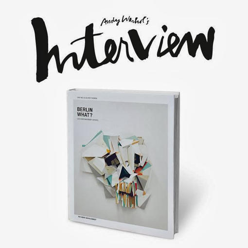The compilation, "Berlin WHAT?" shows the work of both established and up-and-coming contemporary artists based in Berlin.
In May 2010 we opened a gallery called Neonchocolate, a place for contemporary art that offered both young and established artists a platform for their work, irrespective of genre, status or curriculum vitae. The art was – and is – all that mattered..
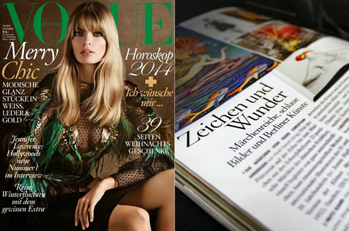Text by Berlinartlink
"IKONO TV" | Germany
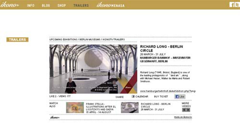Excited to announce my collaboration with Berlin based TV station "Ikono.tv". Ikono.tv is the first broadcasting channel in Germany which is dedicated only to the issue of art. The program is already broadcast completely in HD-Standard. The content consists of a succession of short films, about 3–10 minutes in length.
Furthermore Ikono.tv has a separate channel for collaborative projects with partners such as Art Dubai, the Biennale in Venice or Bauhaus Tv.
BAUHAUS TV was created as part of the 10th anniversary festivities honoring the Bauhaus. It represents an internet platform that combines an active area and an archival area. Through this platform artists, designers, architects, media producers, international institutions and members of the public can present their take on the meaning of Bauhaus
In 2009 ikono.tv could also be seen on the in-flight entertainment of Air France.
Read More
MUSEUM OF SURGICAL SCIENCE | USA
Skull-A-Day and Street Anatomy have joined forces to bring together the greatest collection of skull art, to celebrate the 3rd Annual Skull Appreciation Day!
The resulting exhibition of skull inspired art works co-curated by Noah Scalin and Vanessa Ruiz will be on view at the "International Museum of Surgical Science".
May 31 – August 25, 2013 Opening reception: Friday, May 31 5–9 PM International Museum of Surgical Science 1524 N. Lake Shore Drive Chicago.
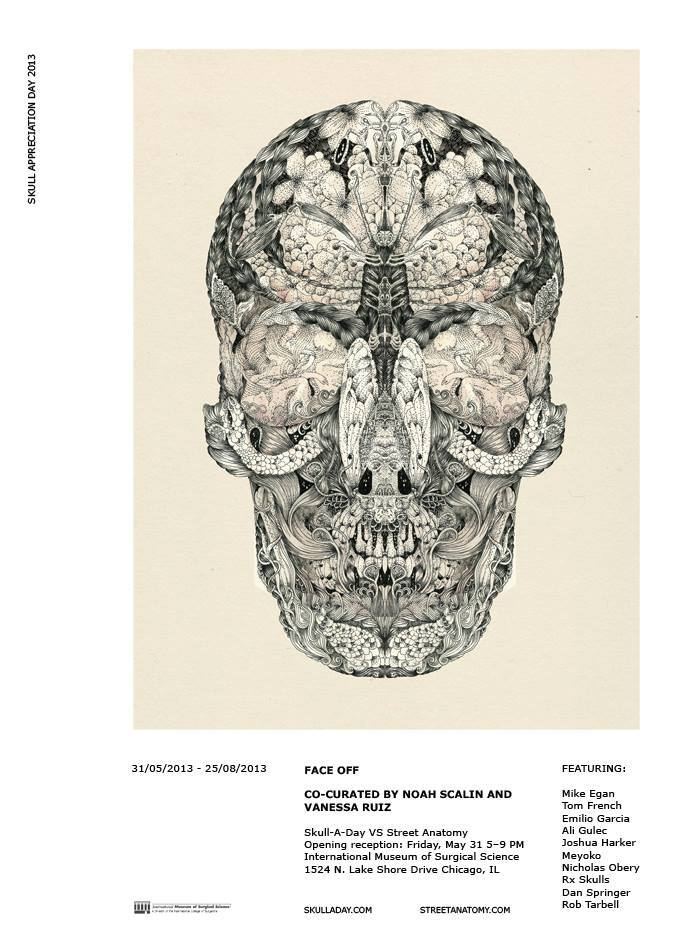"LODOWN" | Germany
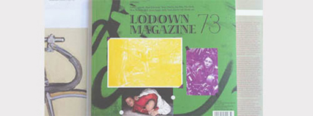I've been included in the 73th issue of "Lodown Magazine" the magazine is now available online and from selected shops and galleries.
Lodown Magazine is a quarterly arts and culture magazine founded in 1995, featuring primarily articles on popular culture and boardsports.
JUXTAPOZ | USA
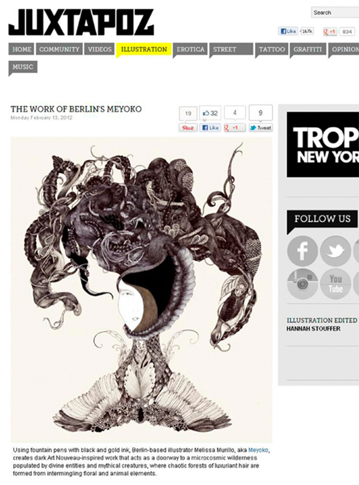Glad to announce my work has been featured by "JUXTAPOZ"as well as in Beautiful Decay , The English Group a British directory, showcasing graphic design, art, books, magazines, film and music, photography, portraits, fashion, architecture.
"GESTALTEN" book | Germany
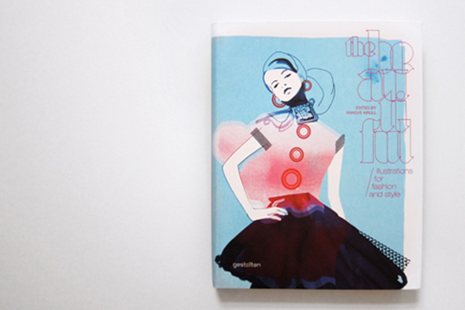A selection of my Drawings has been selected to participate in one of the more exciting books of the year, The book entitled Beautiful "Illustrations for fashion and style "
The book is published by "GESTALTEN". The book is edited and art directed by Anneke Krull the editor of the amazing blog "i love illustration".

"O.K. PERIODICALS" | Netherlands
My artwork Vespertine has been selected for the cover of the last issue of "OK PERIODICALS".
LINDSTROM & PRINS THOMAS | Sweden
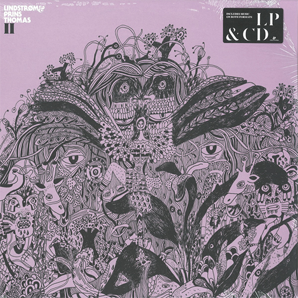Collaboration with "GLOSSYTV" March 2009 Norway | Lindstrom PrinsThomas II | Graphic design for the new Lindstrom & Prins Thomas album on Eskimo Recordings by GLOSSY TV.
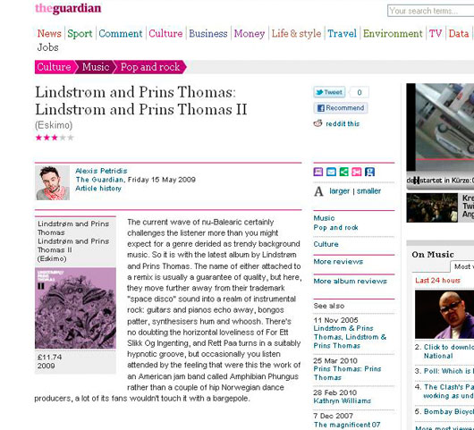"Meticulous art" by DPI | Taiwan
Honored to take part in this amazing book focused on "Meticulous art ". The book is published by DPI.
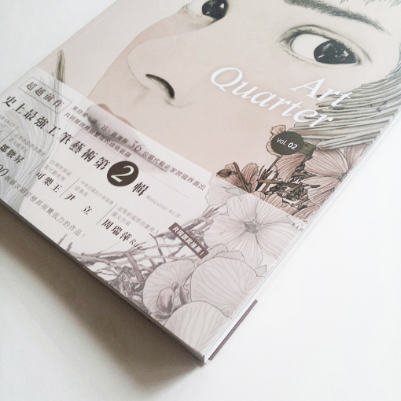DPI is a leading design publication from Taiwan that showcases “imaginative and artistically innovative photography, film and art,”
FASCINESHION | France
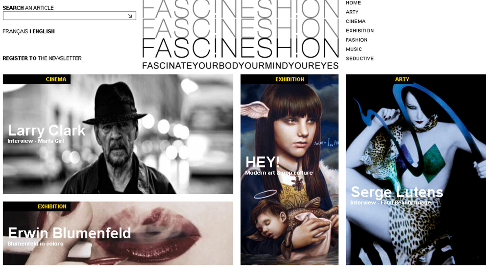Interview for "FASCINESHION" a Parisian videozine | collaboration with Hylas film and Lea Becker.
"CURVY" book | Australia
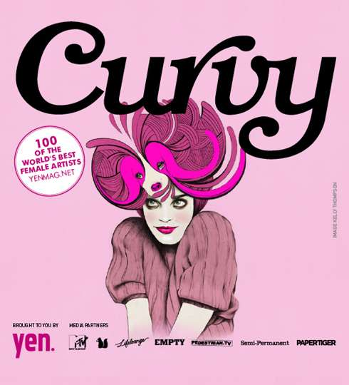Yen Magazine emailed me to tell me I made it into Curvy 2009. If you're not familiar with this incredible book, it showcases some of the most relevant female artists from around the world.
Your favourite annual ALL-GIRL art book, CURVY - created by the team behind YEN MAGAZINE - has been kicking
up a creative storm since 2004 and with the sixth edition about to launch, CURVY remains an international
favourite amongst lovers of art and supporters of female artists. Each year the book features 100 of the
most exciting female graphic designers and illustrators from over 35 countries around the world. This year
we've gone further with 120 artists featured.
CURVY is a must for anyone passionate about graphic design and illustration that wants to be inspired by a
new generation of outstanding female creative talent. Produced by YEN magazine - CURVY kicks off again in
April & consists of a cool limited edition book and a national event tour.
Special thanks to: Semi Permanent, MTV, Design is Kinky, Lifelounge, Empty, Pedestrian. Drinks provided by Peroni Leggera.
FILE magazine | UK
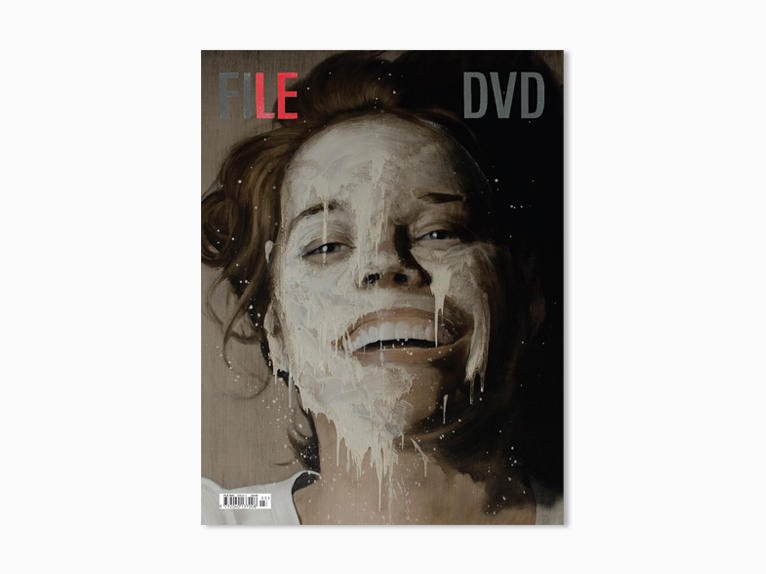So happy to be included in this exquisite magazine from UK.
FILE Magazine is a publication featuring a broad selection of visual culture in the fields of graphic design, art, photography, fashion and moving image. Beautifully presented in a 30 x 39 cm hard cover with a full colour 96 pages newsprint stitched inside.Each issue is accompanied by a full-screen online player, Screening in full the issue’s short films, music videos and documentaries. A magazine to Watch & Read.
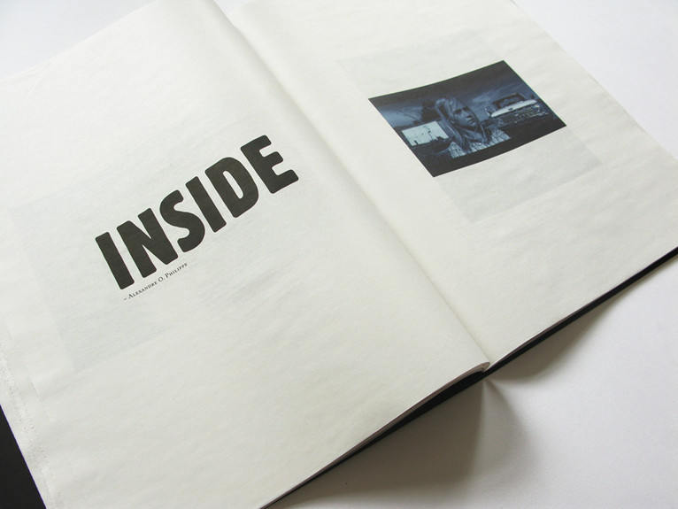 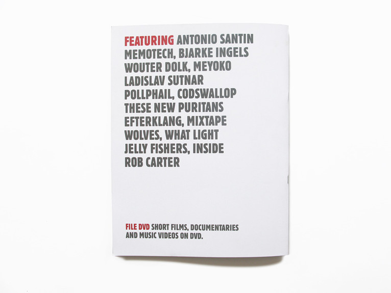DESIGN WALK | Greece
"DESIGN WALK" takes place in the vibrant area of the city next to the Acropolis, leading the visitor between cult shops and hip bars to discover works by award-winning graphic designers, in one of the most inspiring neighbourhoods in Europe, where ancient Greece, West, East, yesterday and tomorrow meet For the 2010 walk.
Double decker the London-based curating agency, is challenging 13 Graphic Design Studios to createa pieces of work inspired by the contradictions / oppositions with which every designer has to deal, and which arise from fundamental questions in design methodology. The resulting exhibition, POLES APART, will give a unique visual insight into the creative process – as well as its curious contradictions.
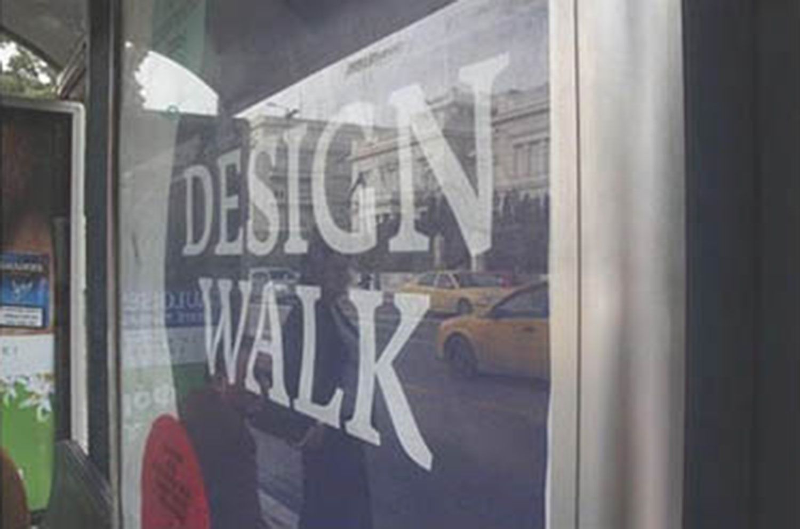Participating designers will create a piece of work based on the following dichotomies:
1. Void vs. fullness 2. Noise vs. silence 3. Beauty vs. Ugliness 4. Interesting vs. boring 5. Thin vs. bold 6. Word vs. image 7. Symbolic vs. literal 8. Landscape vs. portrait 9. Positive vs. negative 10. Anarchy vs. order 11. Digital vs. analogue 12. Foreground vs. background 13. Original vs. copy.
Instead of settling for just one side of the dichotomy, the designers will incorporate both into their work and use them as creative fuel, with no restrictions on medium or scale.
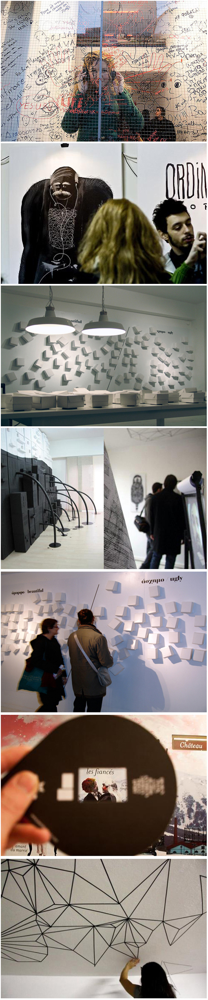5, 6 & 7 February 2010 Friday 18:00–22:00 - Saturday & Sunday 12:00–19:00